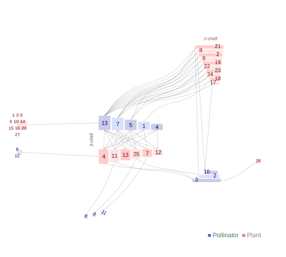

Network: gonzalez_loiselle_2016

Pollinator 1 Aglaeactis.cuppripennis, 2 Coeligena.torquata, 3 Coeligena.violifer, 4 Conirostrum.ferrugeneiventre, 5 Diglossa.brunneiventris, 6 Diglossa.cyanea, 7 Diglossa.mystacalis, 8 Diglossa.sittoides, 9 Ensifera.ensifera, 10 Heliangelus.amethestycollis, 11 Lafresnaya.lafresnayi, 12 Lesbia.victoriae, 13Metallura.theresiae
Plant
1 Berberis.lutea, 2 Bomarea.brevis, 3 Bomarea.setacea, 4 Brachyotum.lutescens, 5 Brachyotum.naudini, 6 Greigia.mcbrideana, 7 Centropogon.isabellinus, 8 Desfontainia.spinoza, 9 Disterigma.spp, 10 Dunalia.brachiacantha, 11 Fuchsia.decusatta, 12 Gaiadendron.punctatum, 13 Gaultheria.bracteata, 14 Gentianella.fruticulosa, 15 Gentianella.violacea, 16 Meriania.radula, 17 Miconia.alpina, 18 Monnina.salicifolia, 19 Passiflora.cumbalensis, 20 Pellegrinia.hirsuta, 21 Puya.pseudoeryngioides, 22 Ribes.incarnatum, 23 Rubus.sp, 24 Saracha.punctata, 25 Tristerix.longebracteatus, 26 Tropaeolum.bicolor, 27Vaccinium.floribundum